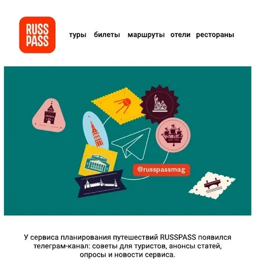
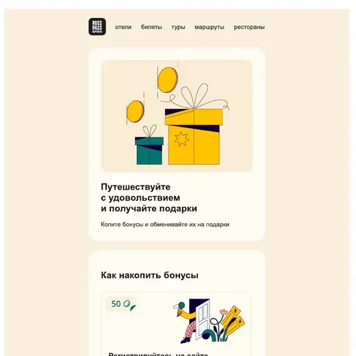

Егор СемёновМаркетинговый редактор и автор спецпроектов
В маркетинге цифровых сервисов с 2022 года: 100+ email-рассылок, промо-механики, программа лояльности, лендинги. Хочу делать спецпроекты и промокоммуникации Почты и Облака.
Спецпроекты и кейсы
 01AR-квесты «Городские квесты»: 12 500+ регистраций, около 7 500 прохожденийС подарком-чаем регистраций в день стало 206 вместо 107. Головоломки, сценарий, путь от баннера до подарка
01AR-квесты «Городские квесты»: 12 500+ регистраций, около 7 500 прохожденийС подарком-чаем регистраций в день стало 206 вместо 107. Головоломки, сценарий, путь от баннера до подарка 02Зообот RUSSPASS для Московского зоопарка: 55 публикаций в СМИ за неделюTelegram-бот-навигатор к 11 животным: написал на Python, придумал концепцию и тексты
02Зообот RUSSPASS для Московского зоопарка: 55 публикаций в СМИ за неделюTelegram-бот-навигатор к 11 животным: написал на Python, придумал концепцию и тексты 03Новогодняя кампания RUSSPASS: +188% продаж у партнёров со скидкой при общем росте 142%11 партнёров, скидки 10–50%, 5 306 билетов по акции
03Новогодняя кампания RUSSPASS: +188% продаж у партнёров со скидкой при общем росте 142%11 партнёров, скидки 10–50%, 5 306 билетов по акции
04100+ email-рассылок RUSSPASS для пользователей и партнёровПримеры: B2C-промо и B2B-рассылка «#RUSSPASS_плюшки». Идея, текст, структура, дизайн 05«Ночь в музее» в Гараже особого назначения: 596 билетов со скидкой 85% против 10 годом раньшеЭксклюзивная онлайн-продажа билетов на RUSSPASS в обмен на рекламу музея
05«Ночь в музее» в Гараже особого назначения: 596 билетов со скидкой 85% против 10 годом раньшеЭксклюзивная онлайн-продажа билетов на RUSSPASS в обмен на рекламу музея
06Тексты: письма, лендинги, флаерыЗаголовки, лиды и CTA, которые я писал и вычитывал 07Перформанс-креативы RUSSPASS: идея, фото и ТЗ дизайнеруБаннеры для РСЯ и сайта: музеи, Аэроэкспресс, новогодние скидки
07Перформанс-креативы RUSSPASS: идея, фото и ТЗ дизайнеруБаннеры для РСЯ и сайта: музеи, Аэроэкспресс, новогодние скидкиОбо мне
В RUSSPASS я был менеджером спецпроектов, в «Проектном офисе» главным специалистом управления спецпроектов. Придумывал спецпроекты и всю коммуникацию к ним, от идеи и истории до текстов, флоу и запуска. Флоу продумываю с помощью методов дизайн-мышления.
Сам пишу и редактирую: письма, лендинги, флаеры, сценарии. В медиа ethereal grooves веду контент-план и правлю тексты редакции из 4 человек.
После запуска разбираю, что сработало и что нет. Примеры есть в отчёте по «Ночи в музее» и в аналитике подарков в AR-квестах.
Навыки
- Спецпроекты и сторителлинг
- Стимулирующие акции и правила
- Ко-промо, партнёрства и бартер
- Креативное продюсирование
- Промо-механики и геймификация
- Переговоры и презентация идей
- CJM и пользовательские флоу
- Лендинги и ТЗ
- Программы лояльности
- Ideashowering (брейнштормы)
- Аналитика контента и аудитории
- Тексты
- Figma
- Яндекс Метрика
- Google Analytics
- Excel / Google Таблицы
- TGStat
- Jira
- Kaiten
- Trello
- Notion
Как я работаю с командой
В «Проектном офисе» координировал проектную команду из 7 человек: 3 дизайнера, контент-менеджер, разработчик, аналитик и копирайтер. Ставил задачи и сроки, принимал работу.
Перевёл планирование и учёт задач из Excel в Kaiten. Сам ставил задачи и дедлайны и расписывал их в карточках. Часть коллег привыкла к таблицам, поэтому переход пришлось отстаивать.
Руководство стало видеть статус задач без лишних созвонов, а я видел, где работа застревает. А когда к команде приходили с претензиями, история карточек помогала отстоять репутацию команды.
Редакция ethereal grooves
Веду контент-план и медиаплан.
Раз в неделю созваниваемся всей редакцией: разбираем, как зашли публикации, сверяем сроки, рассказываем, что сделали за неделю.
Тексты редакторов правлю сам перед публикацией.
Опыт
Защитил магистерскую в ВШЭ. Организовал оперу «Дафнис и Хлоя» в галерее fābula и делал к ней звук. Участвовал в выставке ВШЭ «Что ты сделал для хип-хопа в свои годы» на Винзаводе. Организовал сцену ethereal grooves на фестивале Signal
Кураторская платформа электронной музыки: редакция, PR, контент
Позвали обратно, уже в управление спецпроектов. Digital фестиваля «Усадьбы Москвы» и проекта «Московское чаепитие»: лендинги, CJM, AR-квесты, карты. Координировал проектную команду из 7 человек
Студия Эрика Мусина: логистика и производство в проектах «Forbidden Fruit», «Balance» и «Folder»
Проект того же АНО «Проектный офис». Позвали после практики в РАНХиГС. Федеральный туристический сервис: бонусная программа, 100+ email-рассылок, партнёрские кампании, кросс-промо и бартеры
Диплом: руководство по подготовке аудиобрендбуков, то есть того, как бренд звучит в рекламе, продукте и офлайне
Диплом: написал программу, которая по веб-камере распознаёт эмоции зала и подсказывает спикеру, что поправить в презентации. Защита на «отлично»
Хочу быть маркетинговым редактором в Mail
Москва, офис, гибрид или удалённо. Быстрее всего отвечаю в Telegram.